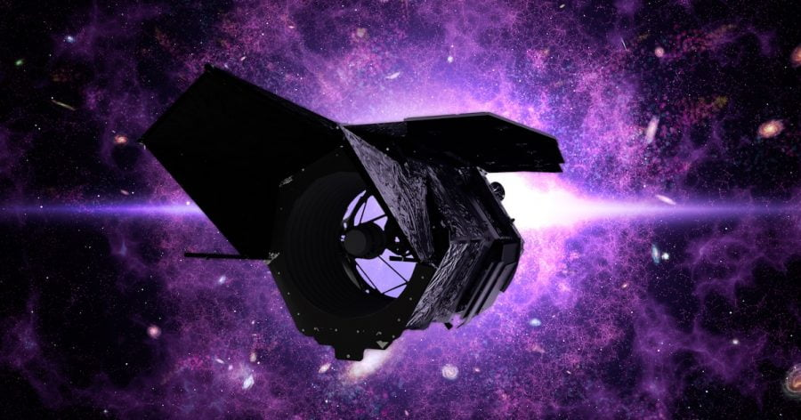

နာဆာက လက်ရှိ လွှတ်တင်ထားတဲ့ အာကာသ တယ်လီစကုပ် တွေထဲမှာ ဂျိမ်းစ်ဝက်ဘ် (James Webb Space Telescope) အာကာသ မှန်ပြောင်းကြီးနဲ့ ဟတ်ဘယ်လ် (Hubble Space Telescope) တယ်လီစကုပ် တို့ကို လူသိ များကြပါတယ်။
ဒါပေမယ့် နာဆာက လက်ရှိ အာကာသထဲ လွှတ်တင်ထားပြီး အသုံးပြု နေတဲ့ တယ်လီစကုပ် အရေအတွက်ဟာ ဒီနှစ်ခု မကပါဘူး။ ဒီ အထဲမှာ သိပ်ပြီး လူသိများ ထင်ရှားခြင်း မရှိတဲ့ NuSTAR တို့လို၊ Swift တို့လို တယ်လီစကုပ်တွေလဲ ပါဝင်ပါတယ်။ (NuSTAR က X-Ray လှိုင်းတွေကို ဖမ်းယူတာ ဖြစ်ပြီး Swift ကတော့ ဂမ်မာရောင်ခြည် ပေါက်ကွဲမှု (gamma ray bursts) တွေကို ဖမ်းယူဖို့ လွှတ်တင်ထားတာ ဖြစ်ပါတယ်။
ဒီ အာကာသ တယ်လီစကုပ် မိသားစု ထဲကို လာမယ့် ၂၀၂၇ မှာ ဝင်ရောက် လာမယ့် အာကာသ တယ်လီစကုပ် အသစ်ကတော့ နန်ဆီ ဂရေ့စ် ရိုမန် (Nancy Grace Roman Space Telescope) အာကာသ တယ်လီစကုပ် ကြီးပဲ ဖြစ်ပါတယ်။
ဒီ ရိုမန် တယ်လီစကုပ် ကြီးကို ပြင်ပဂြိုဟ် (exoplanet) ရှာဖွေရေး ကနေပြီး အမှောင်စွမ်းအင် (dark energy) လေ့လာရေး အထိ သုတေသန မျိုးစုံမှာ အသုံးပြုဖို့ ရည်ရွယ် တည်ဆောက်မှာ ဖြစ်တယ်လို့ သိရပါတယ်။
ရိုမန် တယ်လီစကုပ်ကြီးရဲ့ အလင်းပြန် ကြေးမုံဟာ အချင်း ၂.၄ မီတာ ကျယ်ပါတယ်။ ဒီ အရွယ်အစားဟာ ဟတ်ဘယ်ရဲ့ အလင်းပြန် ကြေးမုံ အရွယ်နဲ့ အတူတူပဲ ဖြစ်ပါတယ်။ ဒါပေမယ့် သူ့မှာ တပ်ဆင်မယ့် ကိရိယာ တွေကတော့ ဟတ်ဘယ်လ် ထက် ပိုပြီး ကျယ်ပြန့်တဲ့ ကောင်းကင် ဧရိယာ ကို စောင့်ကြည့် လေ့လာနိုင်စွမ်း ရှိမယ်လို့ ဆိုပါတယ်။
ဒီ ကိရိယာ တွေအထဲက ကိရိယာ တစ်ခုဟာ ဟတ်ဘယ်လ် ရဲ့ အနီအောက် ရောင်ခြည် အာရုံခံ ကိရိယာ က စောင့်ကြည့်နိုင်တဲ့ ဧရိယာ ထက် အဆ ၁၀၀ ပိုကျယ်တဲ့ ကောင်းကင် ဧရိယာကို စောင့်ကြည့် လေ့လာ နိုင်မှာ ဖြစ်ပါတယ်။
တနည်းအားဖြင့် ရိုမန် ဟာ ဟတ်ဘယ်လ် ထက် ပိုကျယ်ပြန့်တဲ့ ကောင်းကင်ကို တချိန်တည်း တပြိုင်တည်း လေ့လာ စောင့်ကြည့် နိုင်မှာ ဖြစ်ပါတယ်။
ရိုမန် တယ်လီစကုပ် ကြီးမှာ အဓိက အားဖြင့် အာရုံခံ ကိရိယာ နှစ်ခုကို တပ်ဆင် သွားမယ်လို့ သိရပါတယ်။ ပထမ တခုကတော့ Wide Field Instrument ဖြစ်ပြီး ပင်မ ကင်မရာ အဖြစ် တာဝန်ယူမှာ ဖြစ်ပါတယ်။ ဒီ ကင်မရာဟာ မျက်မြင် အလင်း (visible light) နဲ့ အနီး အနီအောက်ရောင်ခြည် (Near infrared) ရောင်စဉ် ခွင်တွေမှာ ရိုက်ကူးနိုင်မှာ ဖြစ်ပါတယ်။
နောက် ကိရိယာ တခုကတော့ Coronagraph Instrument ဖြစ်ပါတယ်။ ဒီ ကိရိယာ မှာတော့ အလွန် လင်းတဲ့ ကြယ်လို အရာဝတ္ထုတွေက လာတဲ့ အလင်းကို ကွယ်နိုင်တဲ့ ကိရိယာတွေ တပ်ဆင် ထားပါတယ်။ ဒီနည်းအားဖြင့် ဒီ ကြယ်အလင်းကြောင့် မမြင်ရတဲ့ အနားဝန်းကျင်က မှိန်ဖျော့ဖျော့ အလင်းရှိတဲ့ အရာဝတ္ထုတွေကို ဓါတ်ပုံ ရိုက်ကူးနိုင်မှာ ဖြစ်ပါတယ်။ အထူးသဖြင့် ဒီ ကြယ်တွေ ကို ပတ်နေတဲ့ ပြင်ပဂြိုဟ် တွေကို ဓါတ်ပုံ ရိုက်ယူ နိုင်ဖို့ ရည်ရွယ်ပါတယ်။
ရိုမန် တယ်လီစကုပ် ကြီးက အဓိက လေ့လာမယ့် နယ်ပယ် တစ်ခုကတော့ ပြင်ပဂြိုဟ် လေ့လာရေးပဲ ဖြစ်ပါတယ်။ အခုထိ ပြင်ပဂြိုဟ်ပေါင်း ၅,၀၀၀ ကျော် ရှာဖွေ တွေ့ရှိထားပြီး ဖြစ်ပေမယ့် ဒါဟာ မစ်ကီးဝေး ဂလက်ဆီထဲမှာ အမှန်တကယ် ရှိနေတဲ့ ပြင်ပဂြိုဟ် အရေအတွက်နဲ့ နှိုင်းယှဉ်ရင် ဘာမှ မဟုတ်ပါဘူး။
ဒီတော့ ရိုမန် တယ်လီစကုပ်ကြီးရဲ့ တာဝန်တွေ ထဲမှာ ပြင်ပဂြိုဟ်တွေ ရှာဖွေပြီး မစ်ကီးဝေး အတွင်းမှာ ပြင်ပဂြိုဟ် ဘယ်နှစ်စင်းလောက် ရှိမလဲ ဆိုတာကို ခန့်မှန်းဖို့ တာဝန်လဲ တခု အပါအဝင် ဖြစ်ပါတယ်။ နောက်ပြီး ဒီ ကြယ် အဖွဲ့အစည်း တွေရဲ့ မစ်ကီးဝေး အတွင်း ပြန့်နှံ့ပုံ ကိုလဲခန့်မှန်း တွက်ချက်မှာ ဖြစ်ပါတယ်။
ဒီ အချက်အလက် တွေကို Roman Galactic Exoplanet Survey (RGES) သုတေသနမှာ အသုံးပြု သွားမှာ ဖြစ်ပါတယ်။ ဒီ သုတေသနဟာ မစ်ကီးဝေး ဂလက်ဆီ အတွင်း ပြင်ပဂြိုဟ်တွေ ပါဝင်တဲ့ ကြယ် အဖွဲ့အစည်း တွေနဲ့ ပတ်သက်တဲ့ အချက်အလက် တွေကို စုဆောင်းသွားမှာ ဖြစ်ပါတယ်။
ဒီလို ပြင်ပဂြိုဟ် တွေကို ရှာဖွေဖို့ ရိုမန် ဟာ အထူး နည်းစနစ် တခုကို အသုံးပြုမှာ ဖြစ်ပါတယ်။ ယခု လက်ရှိ တယ်လီစကုပ် တွေ အများစုဟာ ပြင်ပဂြိုဟ်တွေ ရှာဖွေ တဲ့အခါ Transit လို့ ခေါ်တဲ့ နည်းစနစ်ကို အသုံး ပြုကြပါတယ်။ ဒီစနစ်မှာ ကြယ်ရဲ့ အရှေ့က ဂြိုဟ်ဖြတ်သွားတဲ့ အချိန်မှာ ကြယ်ရဲ့ အလင်းရောင် အနည်းငယ် မှိန်သွားတာကို ထောက်လှမ်းပြီး ပြင်ပဂြိုဟ်တွေ ရှာဖွေတဲ့ နည်းလမ်း ဖြစ်ပါတယ်။
ရိုမန်ကလဲ ဒီ transit နည်းကို အသုံးပြုမှာ ဖြစ်ပါတယ်။ ဒါပေမယ့် ပြင်ပဂြိုဟ် တွေကို တိုက်ရိုက် ကြည့်ရှု ရှာဖွေတဲ့ နည်းလမ်းကိုလဲ အသုံပြု သွားမှာ ဖြစ်ပါတယ်။ ဒီ နည်းက microlensing ခေါ်တဲ့ ဆွဲအား မှန်ဘီလူး နည်းစနစ်ကို အသုံးပြုမှာ ဖြစ်ပါတယ်။
ဆွဲအား မှန်ဘီလူး ဆိုတာက ကြယ်တစင်းက အခြား ကြယ်တစင်းရဲ့ အရှေ့ကနေ ဖြတ်သွားတဲ့ အချိန်မှာ သူ့နောက်က ကြယ်ကလာတဲ့ အလင်းတွေဟာ ဆွဲငင်အားကြောင့် ကွေးသွားပါတယ်။
ဒီလို ကွေးသွားတာက မှန်ဘီလူး တစ်ခုကို ဖြတ်သွားတဲ့ အလင်းတွေ ကွေးသွားတာနဲ့ တူပါတယ်။ ဒါ့ကြောင့် နောက်ခံကြယ်ကို ပုံကြီးချဲ့ပြီး မြင်ကြရပါတယ်။ ဒီနည်းနဲ့ အဝေးက ကြယ်တွေကို ပိုမို ထင်ရှားစွာ မြင်တွေ့ နိုင်ပါတယ်။
ဒီနည်းကို အသုံးပြုပြီး ကမ္ဘာအရွယ် သေးငယ်တဲ့ ဂြိုဟ်တွေကို ရှာဖွေနိုင်မှာ ဖြစ်ပါတယ်။ ကံကောင်းရင် ကြီးမားတဲ့ လ တွေကိုတောင် ရှာတွေ့နိုင်မယ်လို့ နာဆာက မျှော်လင့်ပါတယ်။
ရိုမန် တယ်လီ စကုပ်ကြီးကို ၂၀၂၇ မေလထဲမှာ လွှတ်တင်နိုင်ဖို့ လျှာထားတယ်လို့ သိရပါတယ်။
Ref: Everything We Know About NASA’s Nancy Grace Roman Space Telescope | Slash Gear
နာဆာက အသစ်လွှတ်တင်မယ့် Nancy Grace Roman တယ်လီစကုပ်ကြီး

September 15, 2022
Other Posts
- စကြာဝဠာကနဦးမှ ရှေးအကျဆုံး black hole တွင်းနက်ကြီး ဂျိမ်းစ်ဝက်ဘ် ရှာတွေ့
- NASA: စကြာဝဠာ အစဦးက ရှေးဟောင်းကြယ် ရှာတွေ့
- စိတ်ဖြင့် ထိန်းချုပ်ပြီး အောက်ပိုင်းသေသူ လမ်းလျှောက်နိုင်စေသောစက် တီထွင်အောင်မြင်
- Black Hole တွေနားမှာ အဆင့်မြင့် သက်ရှိအဖွဲ့အစည်းတွေ ရှာတွေ့နိုင်မယ်
- အခြားဂြိုဟ်တွေပေါ် လူသားတွေခြေချနိုင်မယ့်အချိန်ကို နာဆာပညာရှင်တွေ ခန့်မှန်း
- လက်ရှိ ဘက်ထရီတွေထက် ၁၀ ဆလောက် ပိုခံနိုင်မယ့် ဘက်ထရီသစ် တီထွင်အောင်မြင်
- ဥက္ကာခဲဆီပျံသန်းမယ့် တရုတ်ရဲ့အကြံ
- ကြယ်သေကို ပတ်နေတဲ့ ဂြိုဟ်ပျက်ကြီး တစ်လုံးရှာတွေ့
- မြန်မာပြည်မှာ ရှာတွေ့ ခဲ့တဲ့ နှစ် ၉၉ သန်းကျော်က ဒိုင်နိုဆောသွေး စုပ်ထားတဲ့ လှေး
- AI နည်းပညာ ပြိုင်ပွဲမှာ တရုတ်က အနိုင်ရသွားပြီလို့ ပင်တဂွန်ရဲ့ ဆော့ဝဲအရာရှိချုပ်ဟောင်းပြော